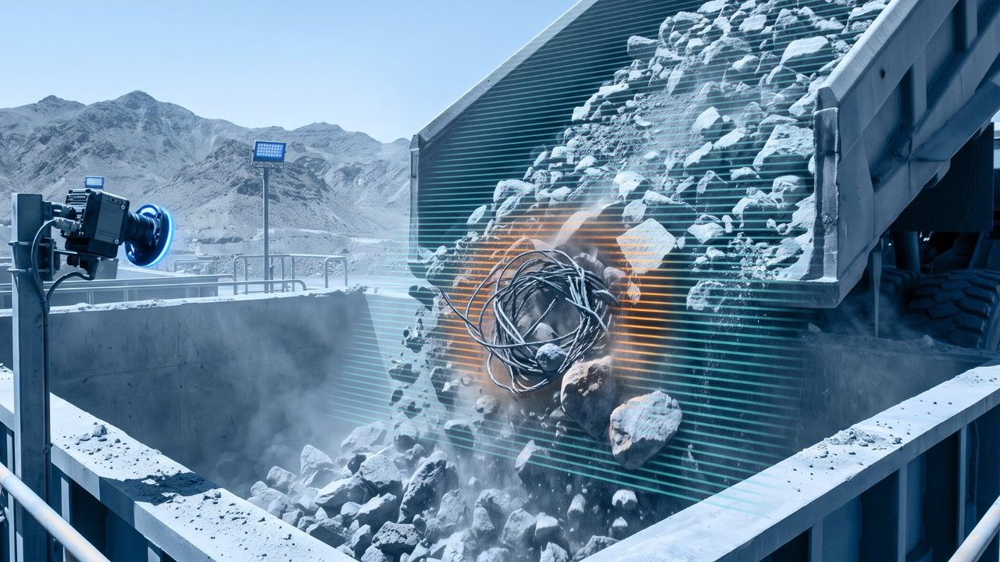

01 · Medir
Serie ID
Identifica desviaciones operativas con visión artificial, midiendo en línea.
Solicitar demo
Desviaciones que nadie ve a tiempo.
- FrothID · espuma de flotación
- BallID · bolas de molienda
- RockID · roca y granulometría
- FeedID · detección de inchancables